Cómo usarla desde cero: entrar, vender, cobrar, imprimir, pedidos, corte de caja, reportes y configuración.
Versión 2.3 · Noviembre de 2026 Las fotos son de la tablet. Las ventas, nombres y montos que aparecen en ellas son de ejemplo.
Contenido
1Lo que necesitas
2Instalar y actualizar la app
3La primera vez: la cuenta de Google
4La impresora, el cajón y dos impresoras
5¿Quién atiende? Entrar con tu PIN
6Abrir el turno
7La pantalla de Ventas
8Tomar un pedido y armar la torta
9Para aquí, para llevar o a domicilio
10Cobrar
11Mandar sin cobrar y la sección Pedidos
12Más opciones de Ventas
13Ventas del día: cancelar y devolver
14Meseros y Cocina
15Subcorte: sacar billetes
16Corte de caja
17Reportes
18Clientes, posadas y eventos
19Productos e inventario
20Configuración
21El personal y sus puestos
22Respaldos y la nube
23Una noche de trabajo, paso a paso
24Si algo no funciona
Cómo leer este instructivo. Los botones se escriben así:
COBRAR, MANDAR SIN COBRAR, Sin imprimir.
«Menú ☰» es el botón de tres rayitas arriba a la izquierda, y «⋮» son los tres puntitos de arriba a la derecha.
Este instructivo siempre a la mano: en la app, Menú ☰ > Instructivo (cómo usar la app), o en la página betoavila92389-oss.github.io/tortastetor/instructivo. Se lee en el navegador y ahí mismo se descarga en PDF.
Lo más importante en una línea: cada noche se abre el turno, se vende y cobra en Ventas, y al cerrar se hace el corte. Lo demás es para cuando haga falta.
1Lo que necesitas
Qué
Para qué
Tablet o celular Android (8.0 o más nuevo)
Ahí se usa la app. Pueden ser varios: la tablet de la caja y los celulares de los meseros. Todos ven las mismas ventas.
Impresora JP-58H (papel de 58 mm)
Imprime el ticket del cliente y la comanda para la plancha. Se conecta por Bluetooth.
Cajón de dinero
Va conectado a la impresora. Se abre solo al cobrar en efectivo.
Cuenta de Google del negocio (tortastetor@gmail.com)
Con ella se juntan los aparatos y se guardan los respaldos en Google Drive. Es la misma en todos los aparatos.
Internet (Wi-Fi o datos)
Solo para juntar los aparatos y respaldar. Sin internet se sigue vendiendo: lo pendiente se sube solo cuando regresa la señal.
Quién puede hacer qué
Cada persona entra con su nombre y su PIN, y ve solo lo de su puesto:
Vender, cobrar, mandar sin cobrar, Pedidos y Clientes. El administrador le puede dar más permisos uno por uno (por ejemplo, hacer el corte).
Mesero
Solo toma la orden y la manda a la cocina. No cobra.
Cocinero
Solo la pantalla de Cocina: ve los pedidos y los marca cuando están listos.
Todo en uno
Para quien atiende solo: toma la orden, cobra y ve la Cocina, pero no ve lo del administrador.
2Instalar y actualizar la app
Instalarla en un aparato nuevo
En el aparato, abre Chrome y entra a: betoavila92389-oss.github.io/tortastetor/descargas.html
Toca Descargar la app y espera a que baje (unos 6 MB).
Abre el archivo descargado y toca Instalar. Si Android pregunta, permite instalar apps de esta fuente.
Busca el ícono de Tortas Tetor y ábrelo.
Actualizarla
Cuando hay una versión nueva, la app avisa con «Hay una versión nueva»: toca para instalarla. También puedes revisar en Menú ☰ > Buscar actualizaciones. Al actualizar no se pierde nada: ventas, productos y configuración se quedan.
No desinstales la app para actualizarla: al desinstalar se borra lo que está guardado solo en ese aparato. Si algún día hace falta, primero haz un respaldo (sección 22).
3La primera vez: la cuenta de Google
La primera vez que abres la app en un aparato pide entrar con la cuenta de Google del negocio. Se hace una sola vez por aparato; después se entra directo a «¿Quién atiende?».
Conecta el aparato a internet.
Toca Entrar con Google.
Elige tortastetor@gmail.com (la misma en todos los aparatos).
Si pregunta por Google Drive, toca Permitir: así los respaldos se guardan solos en tu Drive.
Si la cuenta ya tiene información de otro aparato, la app la baja y deja este aparato igual que los demás.
¿Para qué sirve? Con la misma cuenta, la tablet y los celulares ven las mismas ventas, pedidos, productos y turnos al momento. Si un aparato falla, sigues cobrando en otro.
Usa siempre la misma cuenta. Si un aparato entra con otra cuenta, tendrá su propia información aparte.
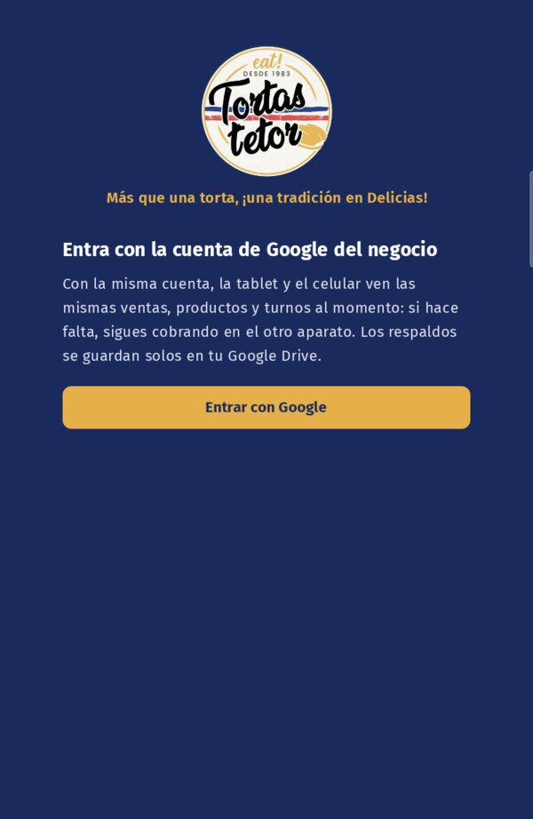
Solo la primera vez en cada aparato
4La impresora y el cajón
Emparejarla con la tablet (una sola vez)
Prende la impresora y ponle papel.
En la tablet ve a Ajustes de Android > Conexiones > Bluetooth y préndelo.
Busca la impresora (se llama JP58H-…) y tócala. Si pide clave, es 0000 o 1234.
Elegirla en la app
Entra como administrador y ve a Menú ☰ > Configuración > Impresora de tickets.
Prende Imprimir tickets y deja Bluetooth.
Si pide permiso, toca Dar permiso y luego Permitir.
En «Elige la impresora» toca la tuya.
Toca Guardar.
Vuelve a entrar y toca Imprimir ticket de prueba.
Las opciones
Cortar el papel al terminar: apagado. La JP-58H no tiene cortador; el papel se arranca a mano.
Abrir el cajón de dinero: prendido. Se abre al cobrar en efectivo.
Esperar para arrancar el ticket: prendido. Al cobrar sale el ticket y la comanda espera a que la mandes (sección 10). Con las comandas en otra impresora no hace falta.
Comandas (cocina): si tienen una segunda impresora para la plancha (ver abajo).
Imprimir las comandas de los demás aparatos: préndelo solo en la tablet que tiene la impresora. Así, lo que manden los meseros desde su celular también sale en papel.
Renglones en blanco al final: el espacio que queda abajo del ticket. Súbele si el final sale cortado; bájale si sobra papel.
Acentos y forma de imprimir: déjalo en Como imagen. Así salen bien los acentos, la ñ y el logo.
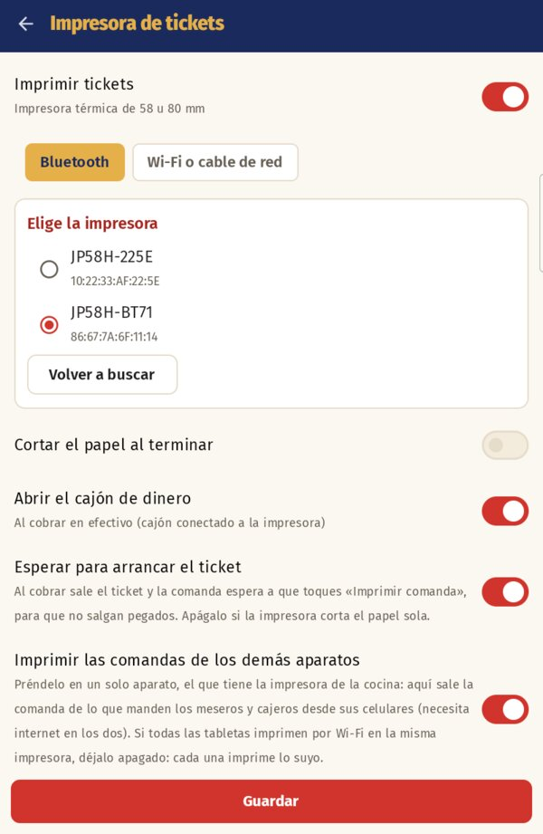
Configuración > Impresora de tickets
4Dos impresoras: tickets y comandas
Si tienen una segunda impresora en la cocina, la app manda cada papel a la suya:
Impresora de la caja: el ticket del cliente, la nota del domicilio, el corte y el subcorte. Abre el cajón.
Impresora de la cocina: las comandas, también las que mandan los meseros desde su celular y las que se reimprimen.
Cómo se configura
Empareja las dos impresoras en Ajustes de Android > Bluetooth (sección 4).
En Configuración > Impresora de tickets, en «Elige la impresora», toca la de la caja.
Baja hasta Comandas (cocina) y toca Otra (Bluetooth), o Otra (Wi-Fi o red) si la de la cocina es de red (con su dirección IP).
Toca la impresora de la cocina en la lista. La de los tickets dice «es la de los tickets»: no elijas esa.
Toca Imprimir comanda de prueba en la cocina para ver que sale ahí.
Toca Guardar.
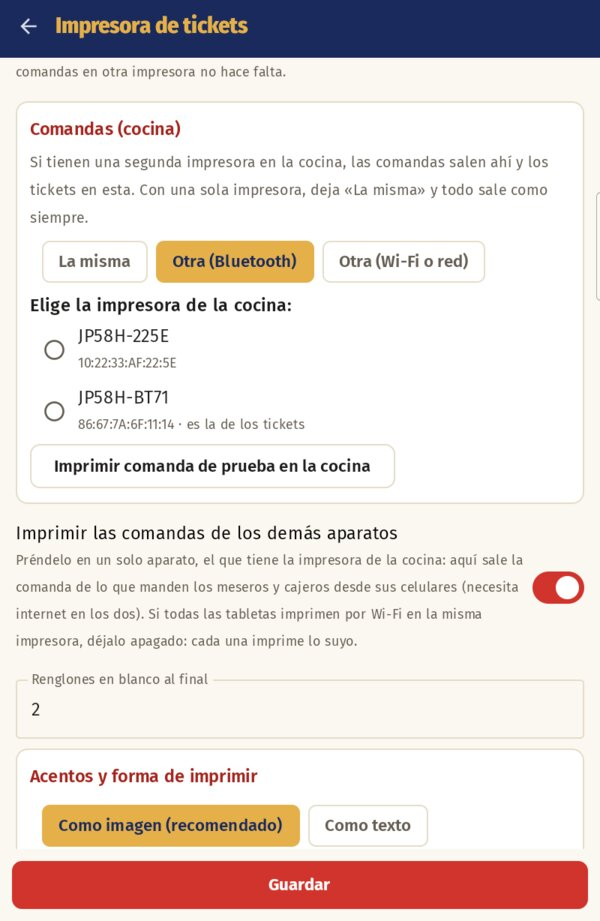
Configuración > Impresora > Comandas (cocina)
Al cobrar ya no aparece «Arranca el ticket»: el ticket sale en la caja y la comanda en la cocina al mismo tiempo.
¿Solo tienen una impresora? Deja «La misma» (así viene). Todo sale en la misma, como siempre, con la espera para arrancar el ticket.
Si la impresora de la cocina está apagada o sin papel, la venta sigue y el ticket sí sale en la caja. La app avisa arriba «No se pudo imprimir (Comanda)». Reimprímela desde Pedidos > Reimprimir comanda.
Se configura en cada aparato. Si los meseros mandan desde su celular, prende «Imprimir las comandas de los demás aparatos» en la tablet que tiene las dos impresoras.
5¿Quién atiende? Entrar con tu PIN
Cada vez que alguien empieza a usar la app (o cuando la otra persona cierra su sesión) aparece «¿Quién atiende?». Nadie entra sin su PIN, así cada venta queda a nombre de quien la hizo.
La primera vez de cada persona
Toca tu nombre y luego Entrar.
Escribe un PIN de 4 números que solo tú sepas, y otra vez abajo.
Toca Guardar y entrar.
Los demás días
Toca tu nombre.
Teclea tu PIN en los botones grandes. Con 4 números entra solo al teclear el cuarto.
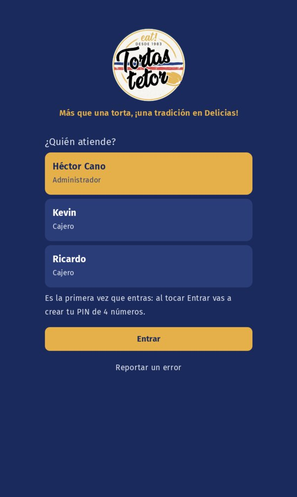
La primera vez
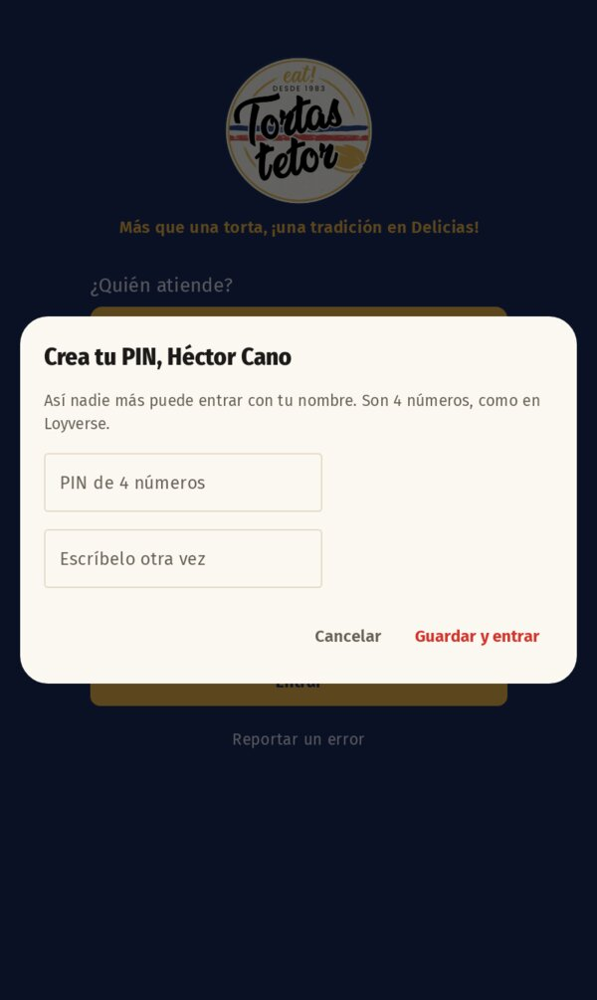
Crear el PIN
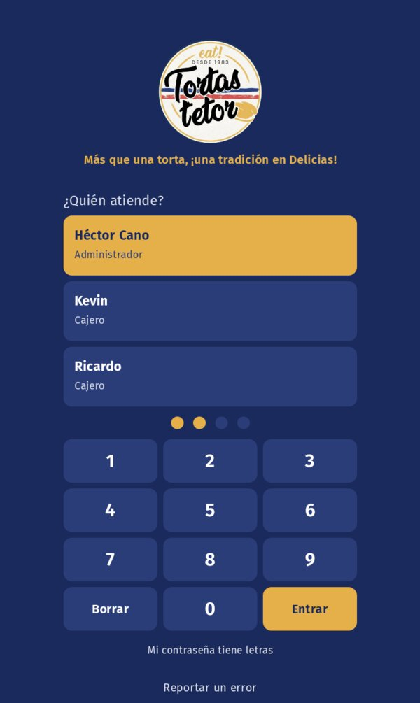
Los demás días: el teclado
Si tu contraseña es más larga o tiene letras, tecléala y toca Entrar, o toca «Mi contraseña tiene letras».
Después de 5 intentos equivocados hay que esperar unos segundos antes de volver a probar.
¿Se te olvidó el PIN? El administrador entra a Configuración > Personal y puestos, toca tu nombre, marca «Quitar su PIN» y guarda. La siguiente vez creas uno nuevo.
Al terminar tu turno: Menú ☰ > Cerrar sesión, para que nadie venda a tu nombre.
6Abrir el turno
Antes de la primera venta de la noche se abre el turno con el fondo de caja: el dinero con el que empieza la caja para dar cambio.
Al entrar el cajero o el administrador, aparece Iniciar turno.
Cuenta lo que hay en la caja y escribe cuántos billetes y monedas hay de cada uno. La suma se hace sola abajo.
Toca Abrir turno.
La noche cruza la medianoche. Lo que se vende antes de las 6 a. m. cuenta para la noche anterior. Por ejemplo, una venta del sábado a la 1 a. m. sale en la noche del viernes, en el corte y en los reportes.
Un mesero no abre turno. Si un mesero manda una orden y no hay turno abierto, la app le pide que lo abra el cajero o el administrador.
El turno queda abierto aunque se cierre la app o se apague la tablet, hasta que se hace el corte (sección 16).
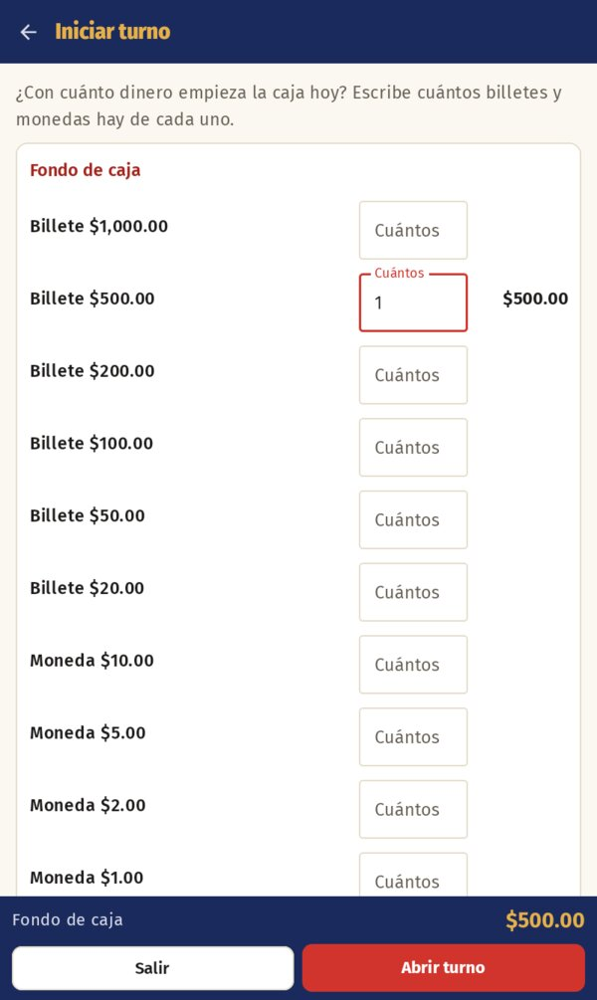
Fondo de caja: aquí, un billete de $500
7La pantalla de Ventas
Es la pantalla principal. De arriba hacia abajo:
Barra azul:Menú ☰ (las demás secciones), el botón de Ventas del día (la lista) y ⋮ (más opciones).
Los pedidos abiertos (Pedido 1, Pedido 2…) y + Nuevo para empezar otro a la vez.
El total del pedido y los botones MANDAR SIN COBRAR y COBRAR.
Para aquí · Para llevar · A domicilio.
Las pestañas del menú:★ Favoritos (las tortas y bebidas de siempre), Todos, Tortas y Bebidas.
Los botones de los productos, con foto y precio.
Lo que lleva el pedido, abajo.
Acomodar los botones: deja el dedo sobre un botón y arrástralo encima de otro para cambiarlos de lugar.
Para cambiar qué sale en ★ Favoritos: Productos > toca el producto > En Favoritos (sección 19).
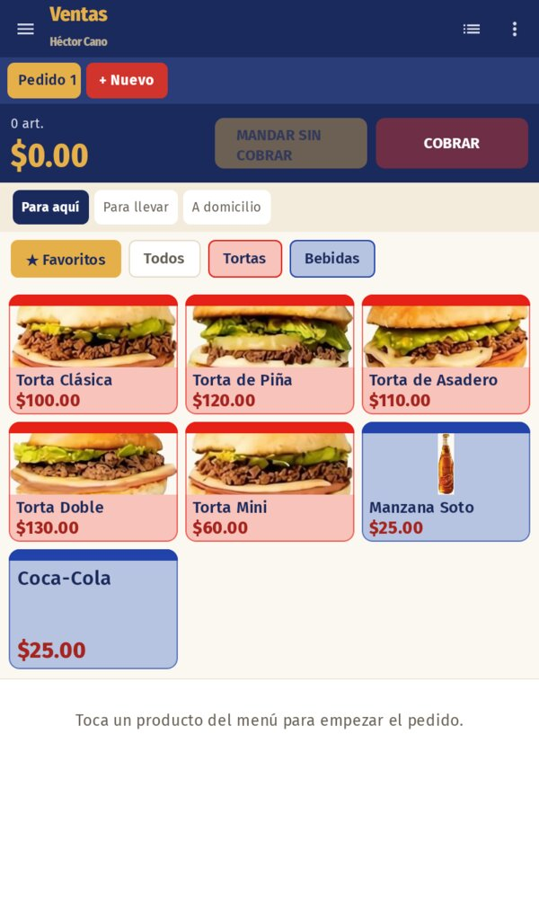
Ventas, lista para el primer pedido
8Tomar un pedido y armar la torta
Toca un producto para agregarlo. Cada toque agrega uno más (dos toques a la Coca-Cola = 2 Coca-Colas).
Lo que se va pidiendo aparece abajo con su precio, y arriba el total.
Para cambiar una torta, tócala en la lista de abajo.
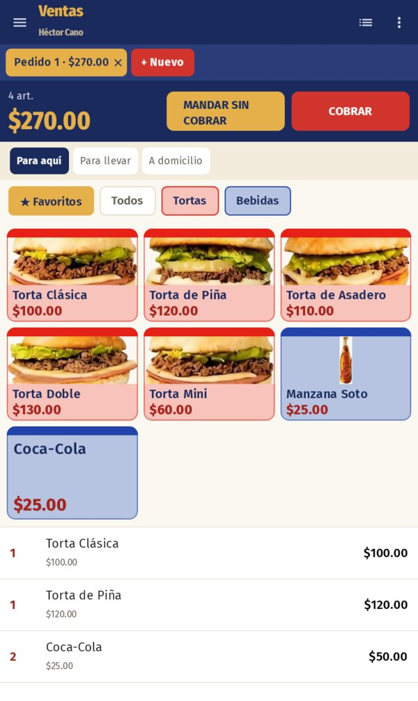
Pedido con 2 tortas y 2 refrescos
Armar la torta
– y +: cuántas iguales.
Quitar: toca lo que NO lleva. Se pone en rojo: «Sin aguacate».
Agregar: los extras que se cobran (asadero, queso, aguacate, jamón, carne y piña, $10 cada uno). Se ponen en verde y se suman al precio.
Cómo la quiere (sin costo): partida en 2, partida a la micha, con salsa o con curtidos.
Nota para la plancha: cualquier otra indicación, por ejemplo «bien dorada».
Cortesía: no se cobra, pero queda anotada en la venta y en los reportes. Solo la puede dar quien tiene permiso.
Listo guarda los cambios; Quitar del pedido la quita.
Todo lo que quitas y agregas sale en la comanda en letras grandes: «SIN AGUACATE», «CON ASADERO EXTRA».
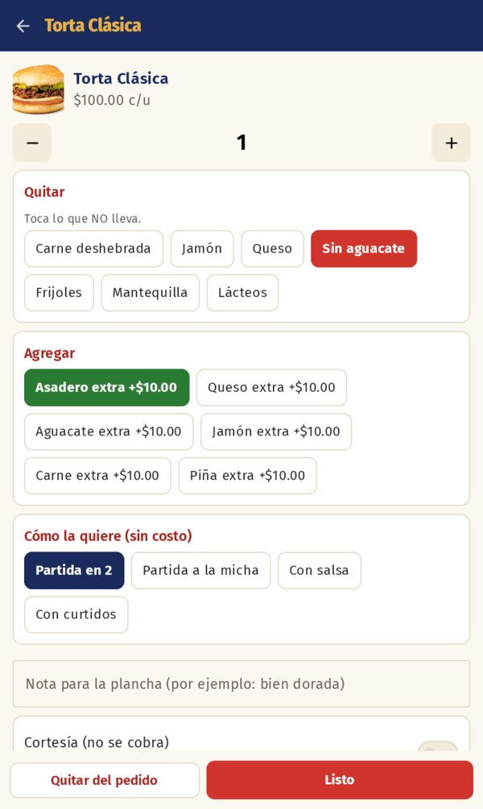
Sin aguacate, con asadero extra, partida en 2
9Para aquí, para llevar o a domicilio
Arriba de los productos se elige cómo se lleva el pedido. Sale en la comanda y en el ticket.
Para aquí
Si el negocio tiene mesas dadas de alta, al tocar Para aquí se elige la mesa. La mesa sale en grande en la comanda y en Pedidos. También se puede poner el nombre del cliente y notas.
Las mesas se dan de alta en Configuración > Horario, mesas, pedidos y domicilio.
Para llevar
Solo se toca Para llevar. Si quieres, pon el nombre del cliente para llamarlo cuando esté listo.
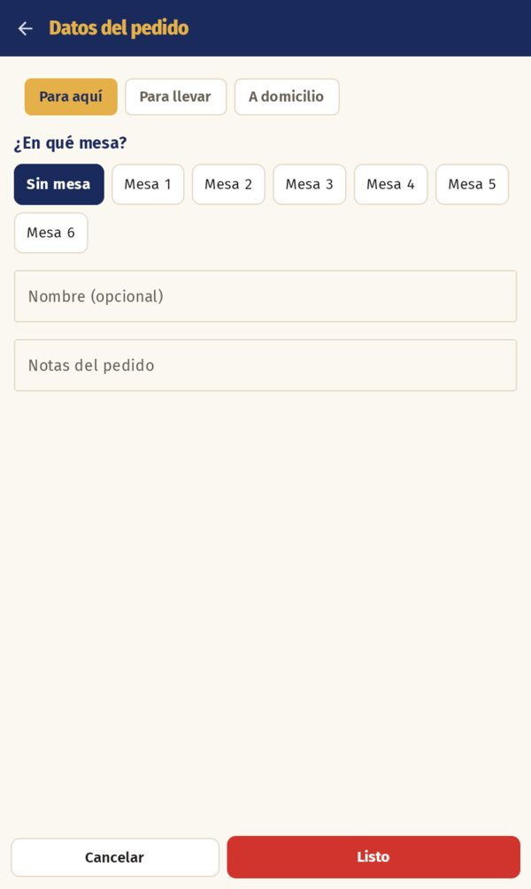
Elegir la mesa
A domicilio
Toca A domicilio.
Escribe el teléfono. Si esa persona ya pidió antes, se llenan solos su nombre, dirección y referencias, y avisa en verde cuántas veces ha pedido.
Si es nuevo, escribe nombre, dirección y referencias (color de la casa, entre qué calles).
En «¿Quién lo entrega?» pon la plataforma o el repartidor.
Toca Listo.
El cliente se guarda solo en Clientes con su teléfono.
Los domicilios se pagan al recibirlos: normalmente se usa MANDAR SIN COBRAR y se cobra cuando regresa el pago (sección 11). Se imprime también una nota para el repartidor con la dirección y cuánto cobrar.
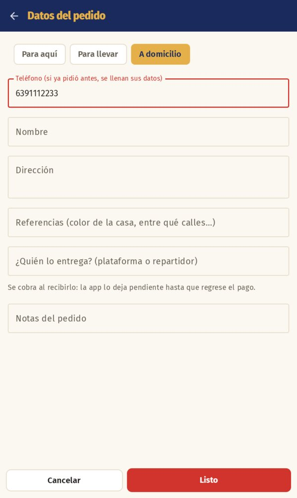
Datos del domicilio
10Cobrar
Toca COBRAR.
Elige la forma de pago: Efectivo, Tarjeta, Transferencia o Mixto (una parte de cada una).
En efectivo, toca el billete con el que paga ($200, $500, $1,000…) o escribe la cantidad. La app dice el cambio. Vacío o Exacto = paga justo.
Toca Cobrar e imprimir, o Sin imprimir si el cliente no quiere ticket.
En efectivo se abre el cajón solo.
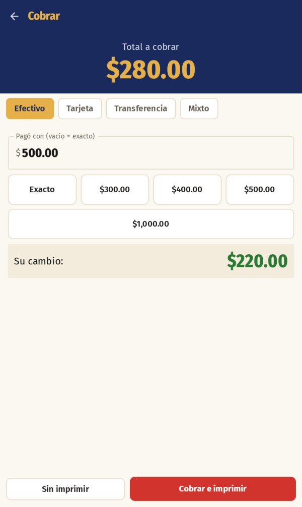
Pagó con $500: su cambio son $220
El ticket y la comanda
Sale primero el ticket del cliente y aparece «Arranca el ticket».
Arranca el ticket y dáselo al cliente.
Toca IMPRIMIR COMANDA: sale la comanda para la plancha.
Así no salen pegados. Si están puestas 2 copias de la comanda, el botón aparece dos veces.
Si cierras esa ventana sin tocar el botón, la comanda se imprime igual: nunca se queda un pedido sin llegar a la plancha.
Después de cobrar, arriba se queda «Pagó con… · Cambio…» y el botón Ver ticket, por si el cliente pregunta.
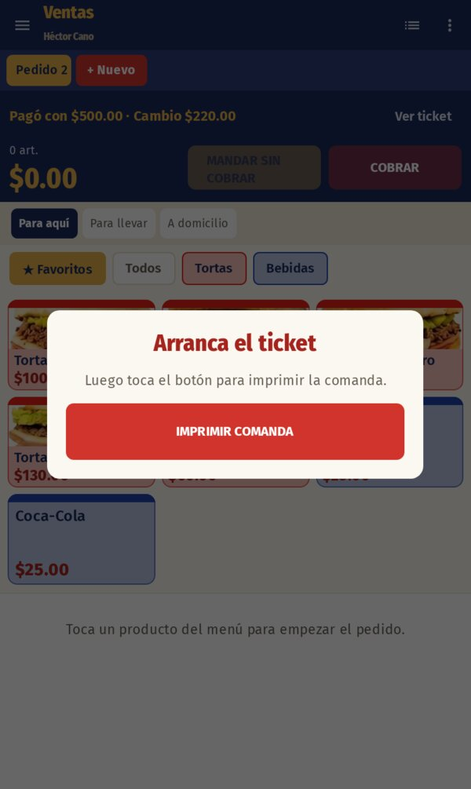
Arranca el ticket y luego imprime la comanda
10Cómo salen el ticket y la comanda
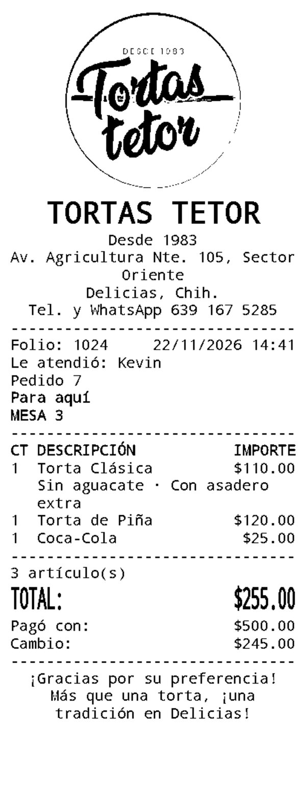
El ticket del cliente
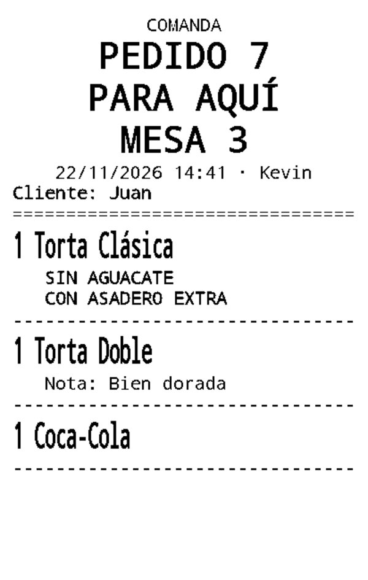
La comanda para la plancha
El ticket lleva el logo, los datos del negocio, folio, quién atendió, lo que se pidió con sus precios, el total, con cuánto pagó y el cambio.
La comanda no lleva precios: el número de pedido, para aquí / llevar / domicilio y la mesa en grande, y cada torta con lo que se le quita o agrega.
Si a un pedido que ya se mandó se le agrega algo, la comanda nueva dice «SE AGREGA AL PEDIDO» y trae solo lo nuevo.
Qué sale y de qué tamaño se cambia en Configuración > Diseño del ticket y la comanda (sección 20).
11Mandar sin cobrar y la sección Pedidos
Cuando el cliente paga al final (una mesa) o al recibir (un domicilio):
Arma el pedido como siempre.
Toca MANDAR SIN COBRAR. Sale la comanda y el pedido queda en Pedidos, pendiente de cobrar.
La sección Pedidos (Menú ☰ > Pedidos)
Cada pedido dice en grande PARA AQUÍ (con la mesa), PARA LLEVAR o A DOMICILIO, y si FALTA COBRAR o ya está PAGADO, con el total.
Cobrar: cuando pagan. Se cobra igual que en Ventas.
Agregar algo: lo lleva a Ventas para agregarle más (por ejemplo, otro refresco). Al mandarlo sale una comanda solo con lo nuevo.
Ya está listo: avisa que la plancha ya lo terminó.
Reimprimir comanda: si se perdió el papel.
Cancelar pedido: si el cliente ya no lo quiso (pide el permiso de cancelar).
Arriba se filtra: todos, para aquí, para llevar, a domicilio o por cobrar.
Antes del corte cobra o cancela todo lo que esté en «Por cobrar». El corte avisa si quedan pedidos sin cobrar.
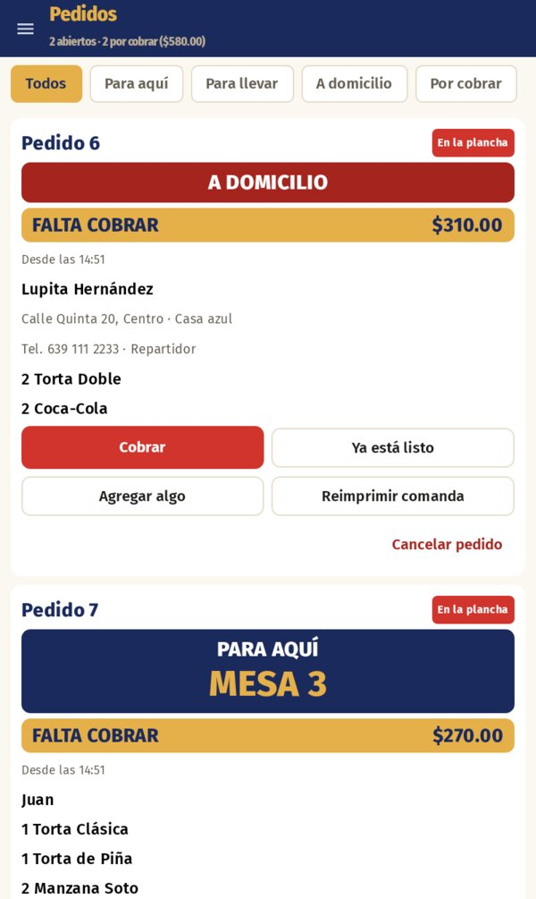
Un domicilio y una mesa por cobrar
Varios pedidos a la vez
En la hora pico toca + Nuevo para empezar otro pedido sin terminar el primero. Arriba quedan sus pestañas (Pedido 1, Pedido 2…); toca una para regresar a ella. La × cierra un pedido que ya no va.
12Más opciones de Ventas (⋮)
Los tres puntitos ⋮ de arriba a la derecha:
Buscar producto: por nombre o código.
Otro producto (sin código): algo que no está en el menú, con su precio a mano.
Entrada de efectivo: dinero que entra a la caja y no es venta (por ejemplo, más cambio).
Salida de efectivo: dinero que sale de la caja (hielo, gas, servilletas). Escribe en qué se gastó: sale en el corte.
Subcorte (sacar billetes): sección 15.
Reimprimir último ticket.
Reimprimir comanda del pedido que tienes en pantalla.
Abrir cajón, sin vender.
Las entradas, salidas y el subcorte son del administrador, o de quien él le dé permiso.
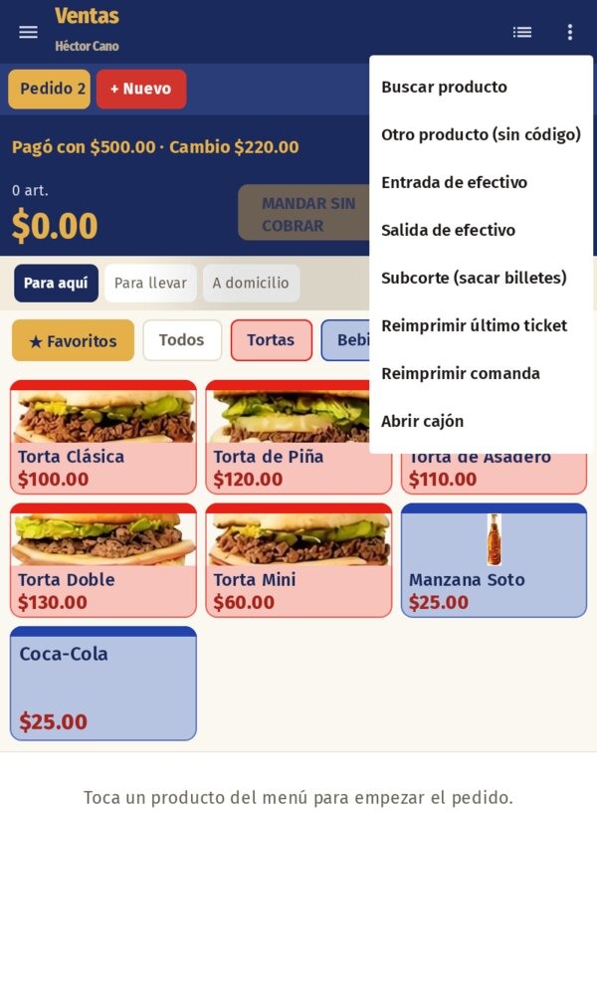
El menú ⋮ de Ventas
13Ventas del día: cancelar y devolver
En Ventas, el botón de la lista (arriba, junto a ⋮) abre Ventas del día: cada venta con folio, hora, forma de pago, quién cobró y el total. Con el calendario de arriba se ven otros días.
Toca una venta para verla:
Ticket: verlo, reimprimirlo o compartirlo.
Devolver un artículo: toca el artículo, escribe cuántos y el motivo, y toca Devolver. La app dice cuánto regresar y cómo.
Cancelar venta: se cancela completa. Los productos regresan al inventario.
Nada se borra. Cancelar y devolver dejan rastro: salen en el corte y en los reportes, con quién y cuándo. Solo lo puede hacer el administrador o quien tenga ese permiso.
Un cajero ve aquí «Mis ventas de hoy»: solo lo que cobró él en la noche de hoy.
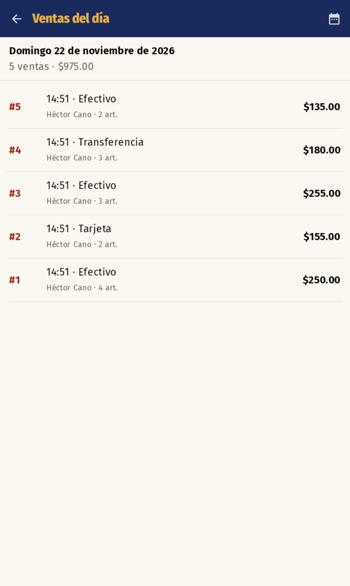
Ventas del día
14Meseros y Cocina
El mesero
Entra con su nombre y PIN en su celular. Su pantalla se llama Tomar orden: arma el pedido igual que en Ventas, elige la mesa y toca MANDAR A COCINA.
La comanda sale en la impresora de la tablet, si en esa tablet está prendido «Imprimir las comandas de los demás aparatos» (sección 4).
El pedido queda en Pedidos para que el cajero lo cobre.
No puede cobrar, poner precios a mano, dar cortesías ni quitar lo que ya se mandó.
El celular del mesero y la tablet de la impresora necesitan internet para que la comanda llegue.
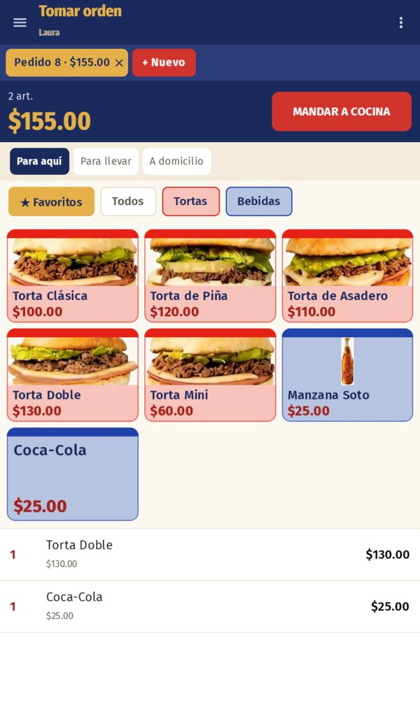
Lo que ve el mesero
La pantalla de Cocina (opcional)
Si en la cocina hay una tableta, ahí se ven los pedidos por preparar, el más viejo primero, con los minutos que llevan. Suena un pitido cuando llega uno.
«SIN …» sale en rojo y «CON …» en verde.
YA ESTÁ LISTO lo marca terminado; en Pedidos se ve como listo.
Abajo se puede regresar uno que se marcó por error.
Se prende en Configuración > Horario, mesas, pedidos y domicilio > Pantalla de Cocina. Viene apagada, porque el negocio usa comanda en papel.
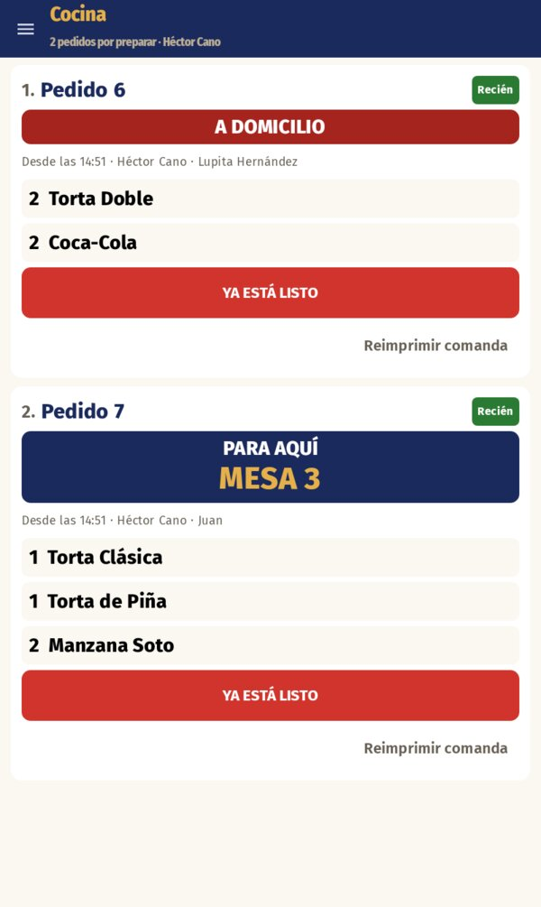
Cocina
15Subcorte: sacar billetes
Sirve para sacar los billetes de más a media noche (por ejemplo a las 11) sin cerrar el turno: se sigue vendiendo igual.
Corte > Subcorte, o en Ventas ⋮ > Subcorte (sacar billetes).
Arriba se ve lo vendido y el efectivo que debe haber en la caja.
Escribe cuántos billetes y monedas SACAS. Abajo dice cuánto queda.
Toca Hacer subcorte y confirma.
Se imprime un papel con lo retirado y una línea para la firma de quien recibe el dinero, y se abre el cajón.
En el corte final, lo que sacaste en subcortes ya se descuenta de lo que debe haber en la caja, y sí cuenta en la ganancia.
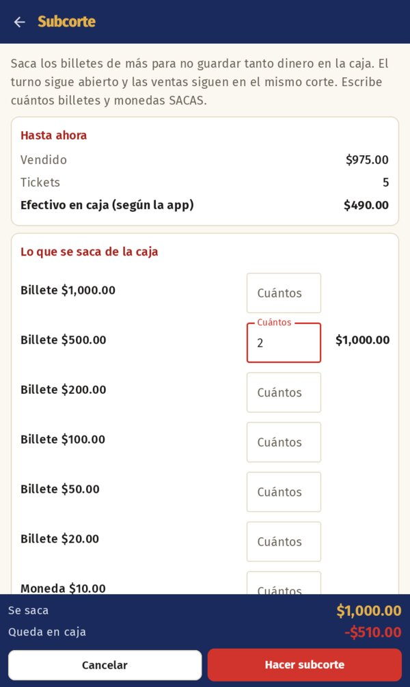
Se sacan 2 billetes de $500
16Corte de caja
Al cerrar se hace el corte: Menú ☰ > Corte. Arriba se elige Turno actual, Turnos anteriores o Del día.
Ganancia hasta ahora: efectivo + transferencias + tarjeta − fondo inicial. Las salidas ya van descontadas.
Dinero en caja: fondo + ventas en efectivo − salidas − subcortes = efectivo que debe haber.
Ventas: cuánto en efectivo, tarjeta y transferencia, el total vendido y cuántos tickets.
Imprimir / compartir imprime el corte o lo manda por WhatsApp sin cerrar el turno.
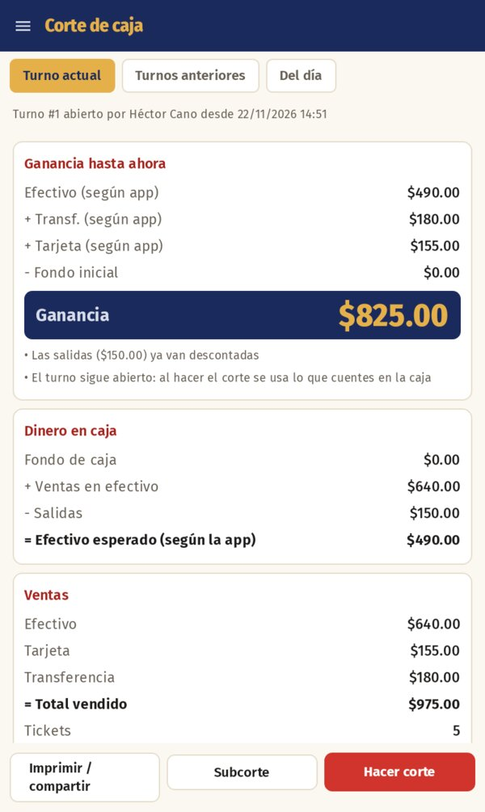
Corte del turno
Hacer el corte (cerrar el turno)
Cobra o cancela lo que quede en Pedidos. Si queda algo, el corte avisa en rojo.
Si usan varios aparatos, revisa que todos tengan internet para que sus ventas ya estén subidas.
Toca Hacer corte.
Cuenta el dinero de la caja y escribe cuántos billetes y monedas hay de cada uno.
Abajo se ve lo que dice la app, lo contado y la ganancia. Si no cuadra, sale el sobrante o faltante.
Toca Cerrar turno. Se imprime el corte y se guarda un respaldo, también en tu Google Drive.
Cerrar el turno no se puede deshacer. El corte queda guardado en «Turnos anteriores» y no se borra.
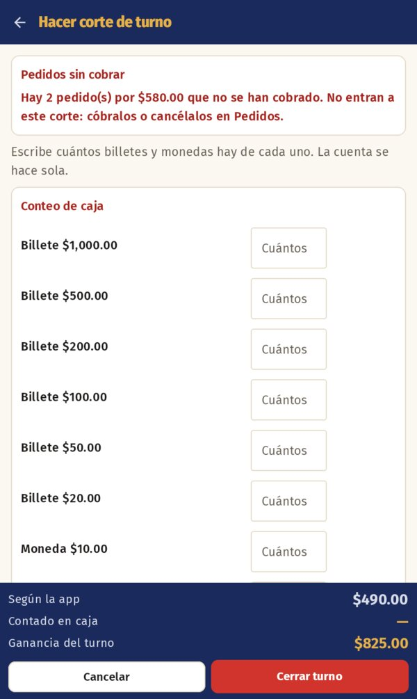
Contar la caja para cerrar
17Reportes
Menú ☰ > Reportes (solo el administrador).
Cuándo: Hoy, Ayer, Esta semana, Este mes, Mes anterior, Este año u Otro día.
Qué:
Resumen: lo vendido, la ganancia, cuántos tickets, el ticket promedio, los artículos y las ventas por hora.
Productos: qué se vende más.
Categorías: tortas contra bebidas.
Pagos y domicilios: efectivo, tarjeta, transferencia; para aquí, para llevar y domicilio; cortesías.
Cajeros: cuánto vendió cada quien.
Para que «Ganancia» sea real, pon el costo de cada producto en Productos. Sin costo, la ganancia es igual a lo vendido.
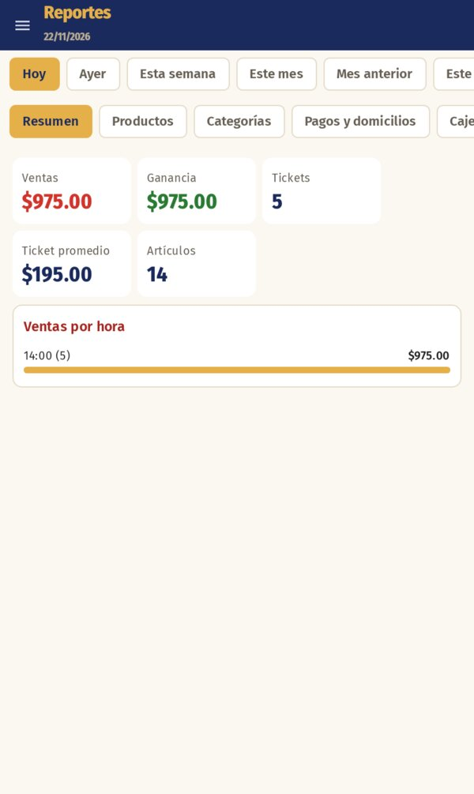
Reporte de hoy
18Clientes, posadas y eventos
Clientes
Los clientes de domicilio se guardan solos al pedir. En Menú ☰ > Clientes se buscan por nombre o teléfono, se ve lo que han pedido y se corrigen sus datos. Nuevo cliente agrega uno a mano.
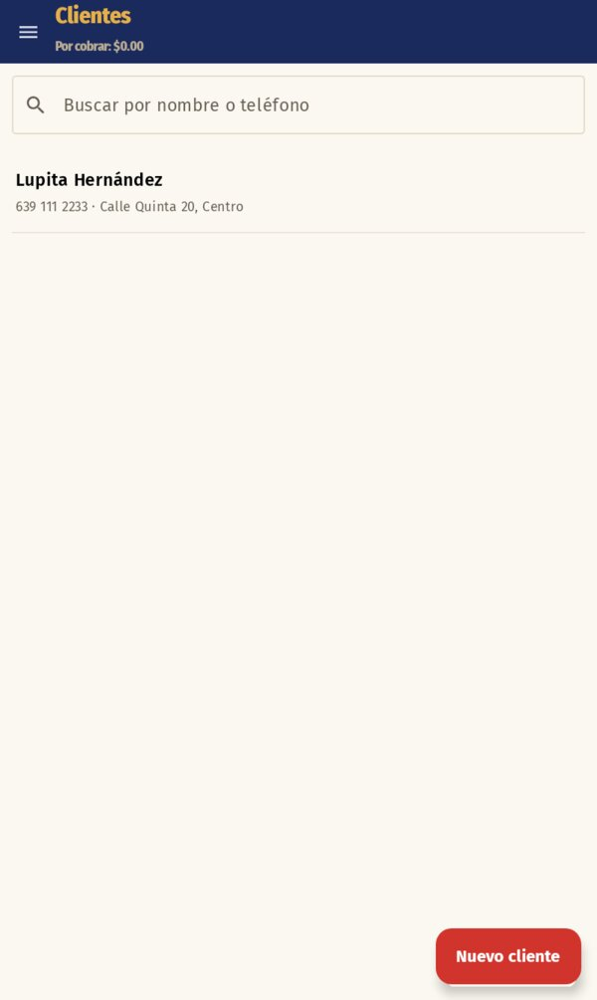
Clientes
Posadas y eventos
Para pedidos grandes con fecha (posadas, fiestas, escuelas):
Menú ☰ > Posadas y eventos y toca +.
Escribe cliente, teléfono, fecha y hora, lugar, qué se lleva y el total.
Cuando dejen dinero, abre el evento y toca Registrar anticipo o pago. Entra a la caja como venta.
La tarjeta dice cuánto falta («Debe…»). Al entregarlo, Marcar terminado.
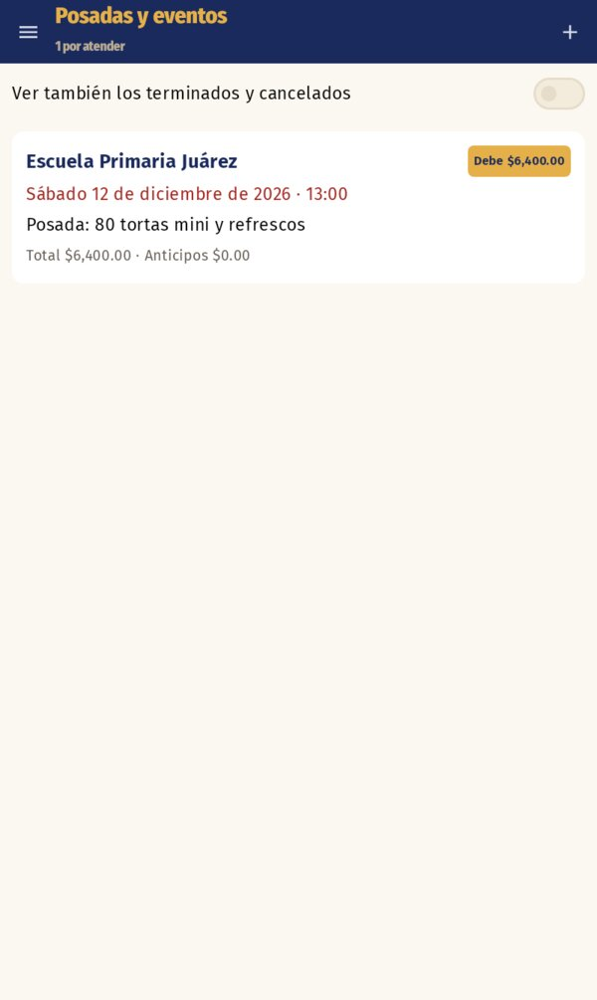
Una posada apartada
19Productos e inventario
Menú ☰ > Productos: el menú con sus precios. Arriba se busca y se filtra por categoría. Nuevo producto agrega uno; Categorías (arriba a la derecha) cambia las categorías y sus colores.
Toca un producto para cambiarlo:
Nombre, precio de venta y costo. El precio nuevo se usa desde la siguiente venta.
Foto del botón:Elegir foto de la galería.
Para las tortas: lo que lleva, separado por comas. Es lo que se puede quitar al armarla.
Es un extra: se ofrece al armar la torta («con asadero extra») en lugar de tener botón propio.
Controlar inventario, si quieres llevar existencias.
Mostrar en los botones de Ventas y En Favoritos.
Al Eliminar un producto, las ventas pasadas se conservan.
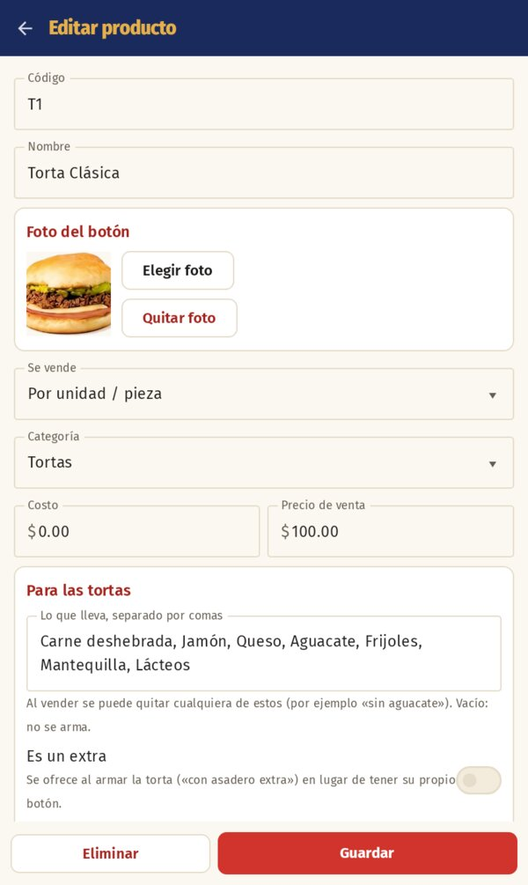
Editar la Torta Clásica
Inventario
Para los productos con «Controlar inventario» (por ejemplo, los refrescos):
Existencias: cuánto hay de cada uno.
Agregar mercancía: cuando llega el proveedor (cuántos y a qué costo).
Ajustar existencia: si al contar no cuadra.
Productos bajos: los que llegaron al mínimo.
Movimientos: todo lo que entró y salió.
Cada venta descuenta sola; una cancelación o devolución lo regresa.
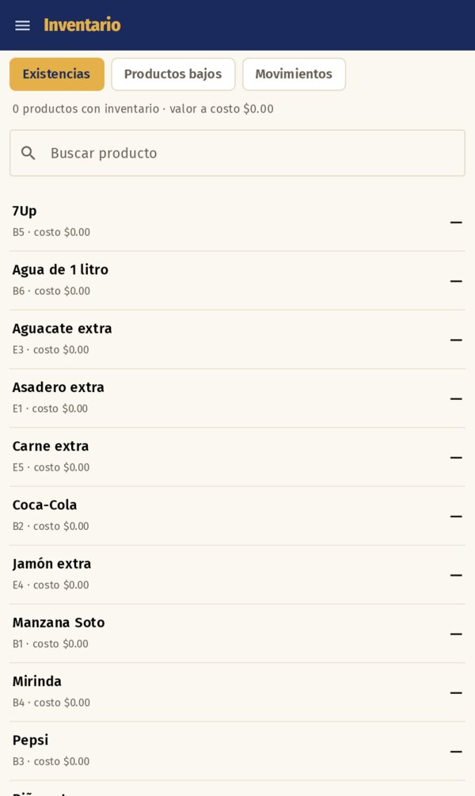
Inventario
20Configuración
Menú ☰ > Configuración (solo el administrador). Cada apartado tiene su Guardar abajo: los cambios se aplican al guardar.
Apartado
Qué se cambia
Diseño del ticket y la comanda
Logo, nombre, dirección, pie, qué datos salen y el tamaño de la letra.
Impresora de tickets
La impresora, el cajón y la espera para arrancar el ticket (sección 4).
Cobro y ventas
Formas de pago, botones de productos, pedir fondo de caja.
Horario, mesas, pedidos y domicilio
Horario, día de descanso, mesas, opciones sin costo de las tortas, comanda y pantalla de Cocina.
Personal y puestos
Quién usa la app y qué puede hacer (sección 21).
Cuenta de Google y nube · Respaldos
Sección 22.
Protector de pantalla
Cuánto esperar para oscurecer la pantalla.
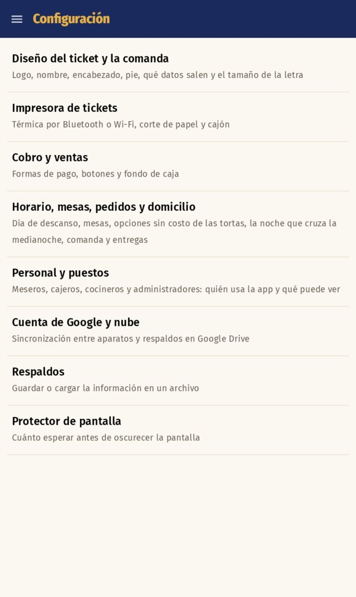
Configuración
20Diseño del ticket y la comanda
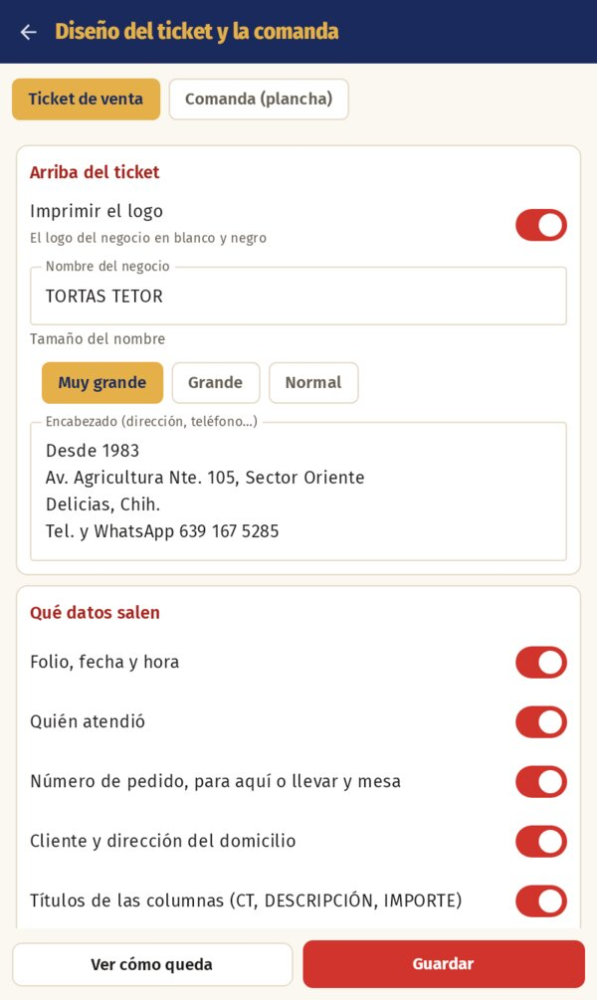
Las opciones del ticket
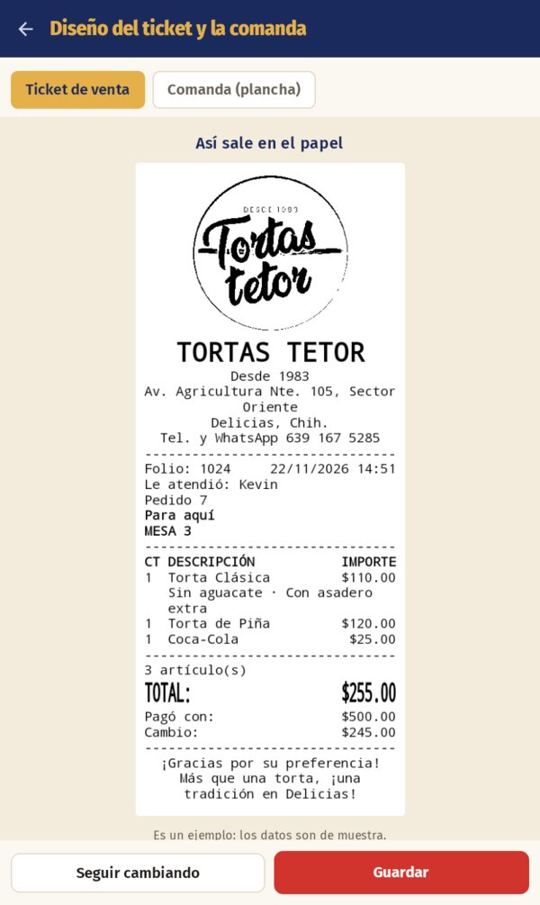
«Ver cómo queda»
Arriba elige Ticket de venta o Comanda (plancha).
Cambia lo que quieras:
Ticket: imprimir el logo, el nombre y su tamaño, el encabezado (dirección, teléfono), qué datos salen (folio, quién atendió, mesa, cliente, lo que se quita o agrega, con cuánto pagó), el tamaño del total, la línea que separa y el pie («¡Gracias por su preferencia!», redes sociales…).
Comanda: el título, si dice para aquí o llevar, la hora, quién la mandó, el cliente, el tamaño de la letra de las tortas, «SIN/CON» en grande, línea entre productos, precios y datos del domicilio.
Toca Ver cómo queda: es exactamente como sale en el papel. Seguir cambiando regresa.
Para probar, Imprimir ticket de ejemplo (los datos son de muestra, no es una venta).
Toca Guardar. El diseño pasa solo a los demás aparatos.
20Cobro, horario, mesas y protector
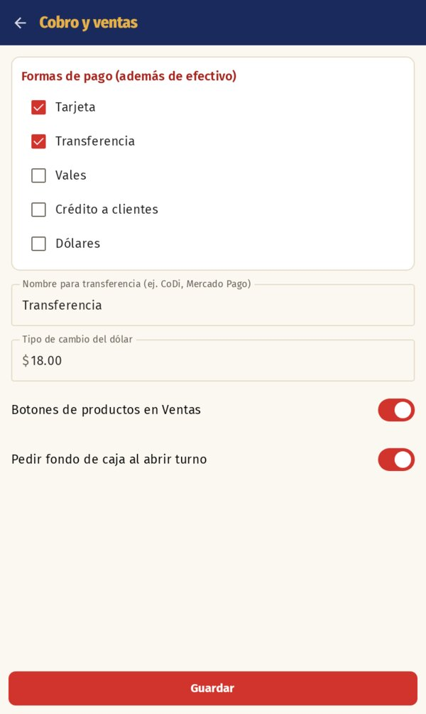
Cobro y ventas
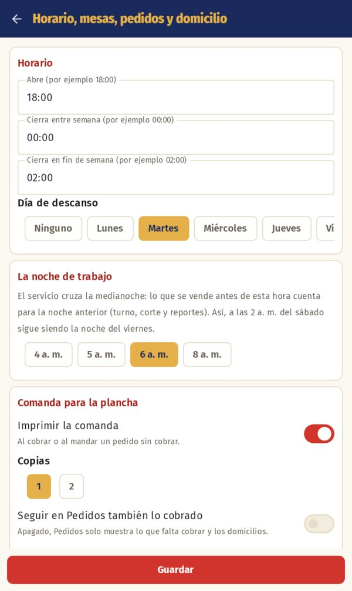
Horario, mesas, pedidos y domicilio
Cobro y ventas
Qué formas de pago aparecen al cobrar, además del efectivo: tarjeta, transferencia, vales, crédito a clientes y dólares (con su tipo de cambio). También si se ven los botones de productos en Ventas y si se pide el fondo de caja al abrir el turno.
Horario, mesas, pedidos y domicilio
Horario y día de descanso (martes).
La noche de trabajo: hasta qué hora de la madrugada cuenta como la noche anterior (6 a. m.).
Comanda: imprimirla o no y cuántas copias; si Pedidos enseña también lo cobrado; la pantalla de Cocina.
Opciones sin costo de las tortas: una por renglón (partida en 2, a la micha, con salsa, con curtidos).
Mesas: agregar o quitar. Sin mesas, «Para aquí» solo pide el nombre.
Domicilio: quién entrega normalmente.
Protector de pantalla
Si nadie toca la tablet, se oscurece con el logo para que no se maltrate la pantalla ni se gaste la batería. Se elige a cuántos minutos. Con un toque se regresa a donde ibas.
21El personal y sus puestos
Configuración > Personal y puestos.
Agregar a alguien
Toca Agregar persona.
Escribe su nombre y un usuario corto (por ejemplo «laura»).
Deja el PIN vacío: lo crea la persona la primera vez que entra.
Elige su puesto: mesero, cajero, cocinero, todo en uno o administrador.
A un cajero o «todo en uno» se le pueden dar permisos extra uno por uno: hacer el corte, subcorte, reportes, cancelar ventas, entradas y salidas…
Toca Guardar.
Cambiar o quitar
Toca su nombre para cambiar su puesto o permisos.
Olvidó su PIN: marca «Quitar su PIN» y guarda.
Ya no trabaja aquí:Eliminar. Sus ventas pasadas se conservan.
Siempre debe quedar al menos un administrador.
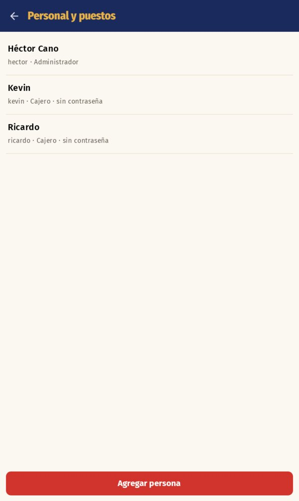
Personal y puestos
22Respaldos y la nube
Cuenta de Google y nube
Sincronización «Al día»: todo lo de este aparato ya está en la nube. Si dice que hay cambios pendientes, falta internet: se suben solos al volver la señal.
Respaldos en Google Drive: uno por día, en la carpeta «Tortas Tetor - Respaldos» de tu Drive. Se sube al salir de la app y al hacer el corte. Subir respaldo a Drive ahora lo hace en ese momento.
Recuperar un respaldo de Drive: para dejar un aparato como estaba en una fecha.
No toques «Salir de la cuenta de Google» salvo que vayas a cambiar de cuenta: después hay que volver a entrar con internet.
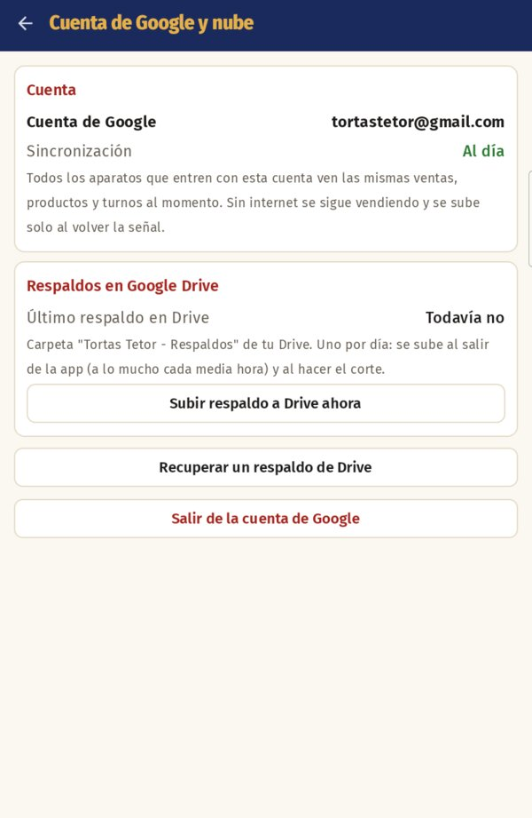
Cuenta de Google y nube
Respaldos en la tablet
La app guarda sola un respaldo al día en la tablet y conserva los últimos 30.
Guardar respaldo en… lo guarda donde quieras: Drive, USB, descargas, o lo mandas por WhatsApp.
Cargar un respaldo pasa toda la información a otro aparato.
Si se pierde o se descompone la tablet
Instala la app en el aparato nuevo (sección 2).
Entra con la misma cuenta de Google (sección 3): baja sola toda la información.
Empareja la impresora (sección 4).
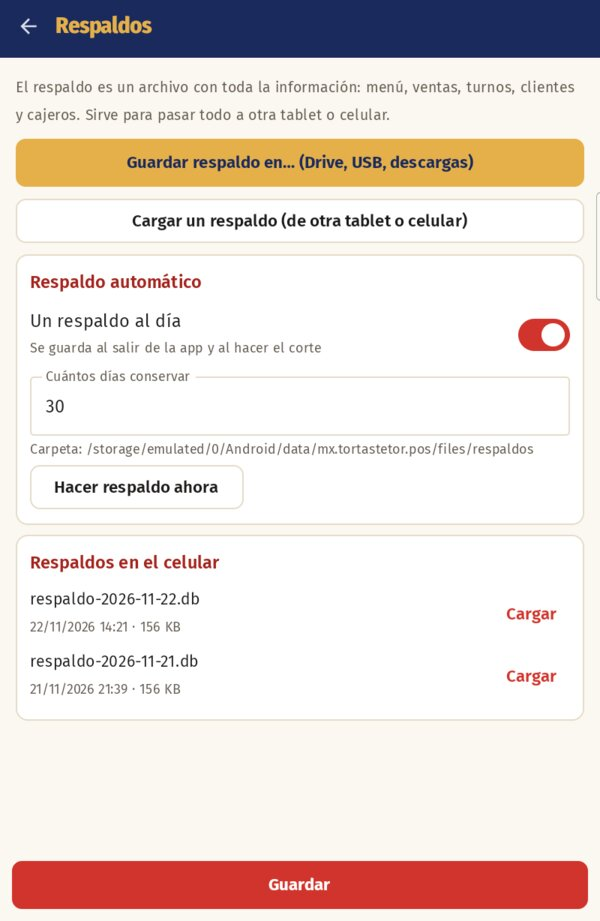
Respaldos
23Una noche de trabajo, paso a paso
Al abrir (6 p. m.)
Prende la tablet y la impresora. Revisa que tenga papel y que el cajón esté conectado.
Abre la app, toca tu nombre y teclea tu PIN.
Cuenta el fondo de caja y toca Abrir turno.
Durante la noche
Cliente en mostrador: toca los productos → arma la torta si hace falta → COBRAR → Cobrar e imprimir → arranca el ticket → IMPRIMIR COMANDA.
Mesa que paga al final: Para aquí → mesa → productos → MANDAR SIN COBRAR. Al pagar: Pedidos → Cobrar.
Domicilio: A domicilio → teléfono (se llenan sus datos) → productos → MANDAR SIN COBRAR. Cuando regresa el pago: Pedidos → Cobrar.
Se agrega algo a una mesa: Pedidos → Agregar algo → productos → mandar.
Gastos de la caja: ⋮ → Salida de efectivo.
Mucho dinero en la caja: ⋮ → Subcorte (sacar billetes).
Al cerrar
Pedidos → cobra o cancela todo lo que esté «Por cobrar».
Corte → Hacer corte → cuenta la caja → Cerrar turno.
Guarda el papel del corte con el dinero.
Menú ☰ → Cerrar sesión.
El martes es el día de descanso: si se abre el turno ese día (por ejemplo para un evento), la app solo avisa y deja vender normal.
24Si algo no funciona
Qué pasa
Qué hacer
Sale «No se pudo imprimir»
La venta sí se guardó. Revisa que la impresora esté prendida, con papel y cerca, y que el Bluetooth de la tablet esté prendido. Luego reimprime: ⋮ → Reimprimir último ticket, o Pedidos → Reimprimir comanda.
La impresora no imprime nada
Apágala y préndela. En Configuración → Impresora de tickets revisa que esté elegida la correcta y toca «Imprimir ticket de prueba».
Salen letras raras o sin acentos
Configuración → Impresora → Acentos y forma de imprimir → Como imagen → Guardar.
El final del ticket sale cortado, o sobra papel
Configuración → Impresora → «Renglones en blanco al final»: súbele o bájale.
La comanda no sale en la impresora de la cocina
Revisa que esté prendida y con papel. En Configuración → Impresora → Comandas (cocina), que esté elegida la de la cocina, y toca «Imprimir comanda de prueba en la cocina».
El ticket y la comanda salen pegados
Configuración → Impresora → prende «Esperar para arrancar el ticket».
No se abre el cajón
Revisa el cable del cajón a la impresora y que «Abrir el cajón de dinero» esté prendido. ⋮ → Abrir cajón para probar. Si no hay luz, ábrelo con la llave.
Se olvidó el PIN
El administrador: Configuración → Personal y puestos → su nombre → «Quitar su PIN» → Guardar.
No hay internet
Se sigue vendiendo normal. Lo pendiente se sube solo cuando regresa. Lo que se manda desde el celular del mesero sí necesita internet para llegar a la impresora.
La app pide «Entrar con Google»
Conecta a internet y entra con la misma cuenta de siempre. La información no se pierde.
Un aparato no ve lo del otro
Los dos necesitan internet y la misma cuenta de Google (Configuración → Cuenta de Google y nube).
Una venta se cobró mal
Ventas del día → la venta → Cancelar venta (o devolver un artículo) y vuelve a cobrarla bien.
Un producto nuevo no aparece en Ventas
Está en la pestaña «Todos». Para que salga en ★ Favoritos: Productos → el producto → «En Favoritos».
No sé cómo hacer algo
Menú ☰ → Instructivo (cómo usar la app): abre este instructivo en el navegador (necesita internet).
Cualquier otra falla
Menú ☰ → Reportar un error. Manda lo que pasó; también se puede desde la pantalla de «¿Quién atiende?».
Tortas Tetor · Más que una torta, ¡una tradición en Delicias! Av. Agricultura Nte. 105, Sector Oriente, Delicias, Chih. · Tel. y WhatsApp 639 167 5285